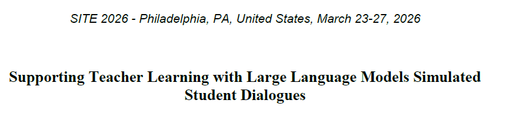

FeaturedSupporting Teacher Learning with LLM-Simulated Dialogues
A research project exploring the use of Large Language Models to simulate student peer discussions in science education. This study demonstrates how LLM-generated dialogues can enhance teacher sense-making by helping educators identify potential student misconceptions and improve responsive teaching strategies. Click to read the full paper.
View Full Report →